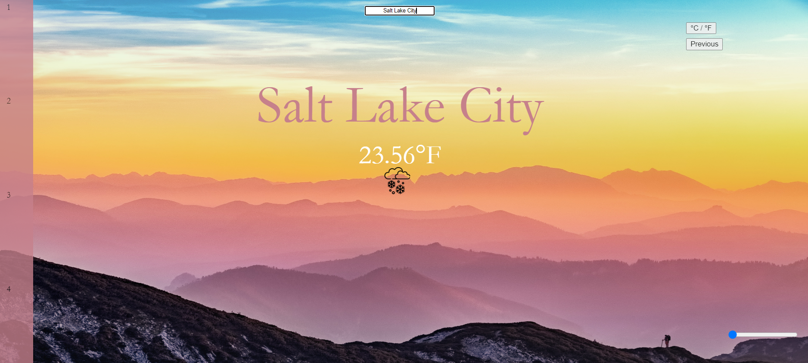

Weather App
Github
Link

Summary
This was my first project that got me motivated about Computer Science years ago.
While quite simple, it was my first time ever being exposed to the use of APIs, and taught me a lot in the development
of a simple website. The application let you input a city where you wanted the weather about,
and then it would use the openweathermap API to gather information about the weather today,
the weather for the next 4 days and the weather the previous 4 days as well. I also added a feature that would
adjust the temperature between fahrenheit and celcius.